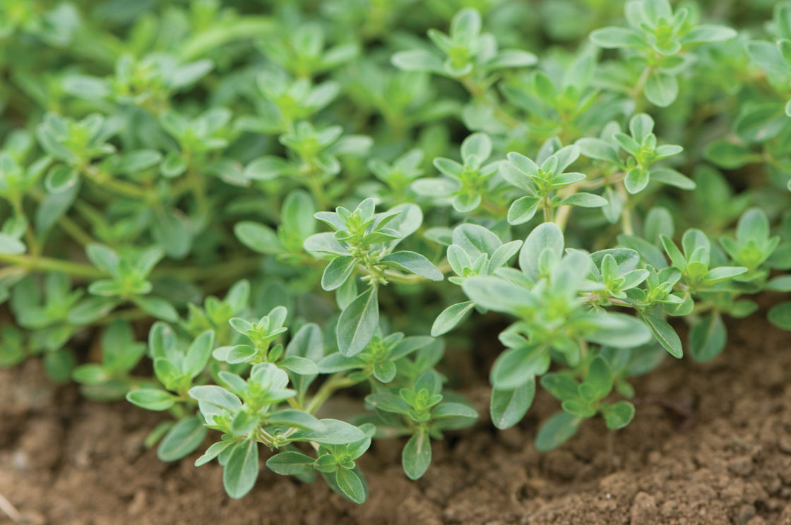

Мајчината душица (позната и како темјаника) е повеќегодишно растение кое луѓето уште од далечното минато
го
користеле за најразлични потреби – медицински, кулинарски, како чај, декорација итн.
Расте на суви и сончеви места во текот на целото лето, на планините, но и на пониските места.
Има повеќе типови од оваа медитеранско билка, но најзастапениот е Thymus vulgaris. Неговите
цветови,
листови
и маслото и денес се употребуваат за третирање на најразлични симптоми, како оние на дијареа, стомачна
болка
и грчеви, артритис, болно грло, бронхитис, грипови итн.
Мајчината душица е повеќегодишно, грмушесто растение високо 20-30 см. Листовите се со нееднаква големина
и
форма, од линеарни до кружни, овални, ланцетни, цели на работ, груби, речиси кожести. Цветовите од
розова до
јоргована формираат кружни цветови на врвовите на стеблата, со силен и пријатен мирис. Расте на сончеви
суви
падини, карпести полиња, пасишта, ливади, во паркови, градини, полиња, покрај патишта и покрај море.
